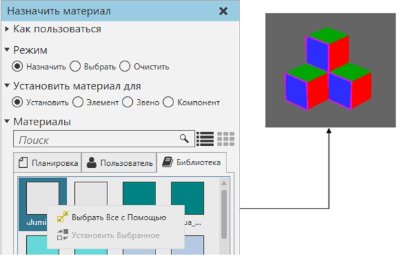

Выбор материалов |
|
Вы можете выбрать материал, используемый более чем одним объектом в 3D-мире. Это похоже на выбор, но вы выбираете материал нескольких объектов. 1.На вкладке Моделирование в группе Геометрия, нажмите стрелку Инструменты, а затем в разделе Материал нажмите Назначить. 2.На панели задач Назначить материал раскройте Материалы, щелкните правой кнопкой мыши материал, а затем выберите Выбрать Все с Помощью. Объекты с этим материалом будут очерчены в 3D мире, но поймите, что вы выбираете материал, а не объект. Пример. Выбор всех синих материалов  |